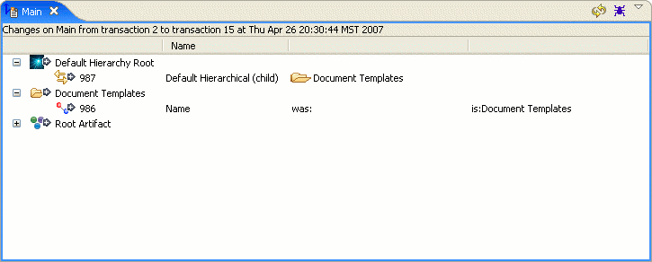

Change Report View

Purpose
The Change Report View is used to summarize the changes that have been made on a branch or series of transactions.
Icons
 Base image for relation links
Base image for relation links Base image for attributes
Base image for attributes Overlay to mark item as an incoming new item
Overlay to mark item as an incoming new item Overlay to mark item as an incoming modification
Overlay to mark item as an incoming modification Overlay to mark item as an incoming delete
Overlay to mark item as an incoming delete Overlay to mark item as an outgoing new item
Overlay to mark item as an outgoing new item Overlay to mark item as an outgoing modification
Overlay to mark item as an outgoing modification Overlay to mark item as an outgoing delete
Overlay to mark item as an outgoing delete Overlay to mark an item as being new but having incoming changes
Overlay to mark an item as being new but having incoming changes Overlay to mark an item as having incoming and outgoing changes
Overlay to mark an item as having incoming and outgoing changes Overlay to mark an item as being deleted but having incoming changes
Overlay to mark an item as being deleted but having incoming changes
Branch Change Report
A Change Report can be performed for a branch two ways. The first way is by selecting right-clicking a branch
from the Branch Manager then choosing the "Show Change Report" menu item. The second way is to select
"Show Change Report" from the Aspect view of an ATS Action that is still in work; this will do a Change
Report for the working branch of the Aspect.
This type of Change Report will display all of the artifacts on the branch that have had an attribute
or relation link modified. It will also do conflict detection on these artifacts against the parent branch.
All changes done on the current artifact will appear with a grey right arrow, while all changes from the
parent branch will be shown with a blue left arrow. Attributes and relation links with multiple changes will
provide a summarized node that shows the final effect of the changes and can be expanded to view all of the
minor changes that were made. If an attribute or relation link was modified on both
branches then the summary will show a red conflict mark to signify that a commit will cause an override
to occur.